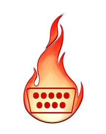

#napalm-hackathon-2016 in networkToCode. You can register in https://networktocode.herokuapp.com/

Short Answer: Whatever you want
If you know what you want to do, go for it. Create an issue on github on the corresponding repo, tag it with hackathon2016 and let people know if you might want to team up
If you don't know what you want to do or you are unsure feel free to let people know on slack, team up with someone that might have an idea that interests you, check the existing issues... don't be shy.